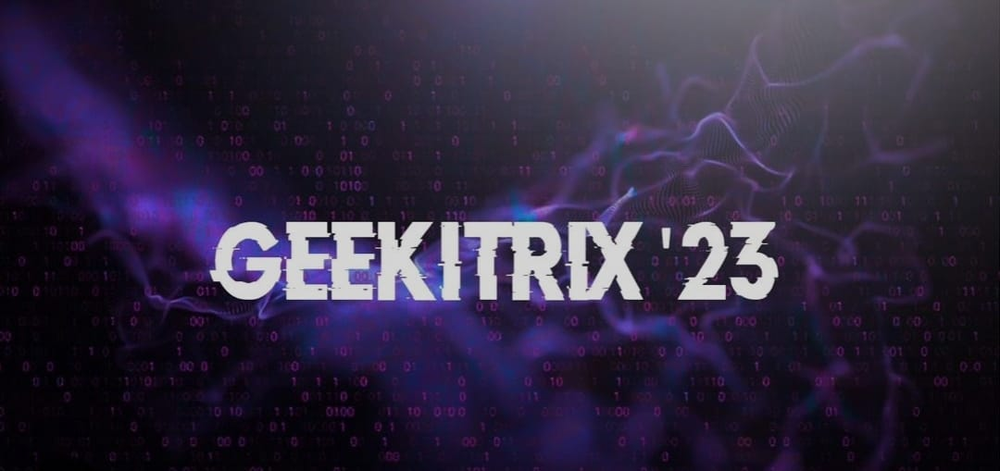

<!DOCTYPE html>
<html>
<head>
<meta charset="utf-8">
<title>Animate map camera around a point</title>
<meta name="viewport" content="initial-scale=1,maximum-scale=1,user-scalable=no">
<script src='https://api.mapbox.com/mapbox-gl-js/v3.0.0-beta.1/mapbox-gl.js'></script>
<link href='https://api.mapbox.com/mapbox-gl-js/v3.0.0-beta.1/mapbox-gl.css' rel='stylesheet' />
<!-- <link href="https://api.mapbox.com/mapbox-gl-js/v2.14.1/mapbox-gl.css" rel="stylesheet">
<script src="https://api.mapbox.com/mapbox-gl-js/v2.14.1/mapbox-gl.js"></script> -->
<style>
body { margin: 0; padding: 0; }
#map { position: absolute; top: 0; bottom: 0; width: 100%; }
.rounded-rect {
        background: white;
        border-radius: 10px;
        box-shadow: 0 0 50px -25px black;
    }

    .flex-center {
        position: absolute;
        display: flex;
        justify-content: center;
        align-items: center;
    }

    .flex-center.left {
        left: 0px;
    }

    .flex-center.right {
        right: 0px;
    }

    .sidebar-content {
        position: absolute;
        width: 95%;
        height: 95%;
        font-family: Arial, Helvetica, sans-serif;
        font-size: 32px;
        color: gray;
    }

    .sidebar-toggle {
        position: absolute;
        width: 1.3em;
        height: 1.3em;
        overflow: visible;
        display: flex;
        justify-content: center;
        align-items: center;
    }

    .sidebar-toggle.left {
        right: -1.5em;
    }

    .sidebar-toggle.right {
        left: -1.5em;
    }

    .sidebar-toggle:hover {
        color: #0aa1cf;
        cursor: pointer;
    }

    .sidebar {
        transition: transform 1s;
        z-index: 1;
        width: 300px;
        height: 100%;
    }

    /*
  The sidebar styling has them "expanded" by default, we use CSS transforms to push them offscreen
  The toggleSidebar() function removes this class from the element in order to expand it.
*/
body {
margin: 0;
padding: 0;
}
#map {
position: absolute;
top: 0;
bottom: 0;
width: 100%;
}
.shajanm {
background-image: url('mess.png');
background-size: cover;
width: 30px;
height: 30px;
border-radius: 10%;
cursor: pointer;
}
.marker {
background-image: url('flagvideo12.gif');
background-size: cover;
width: 100px;
height: 100px;
border-radius: 10%;
cursor: pointer;
}
.shajan {
background-image: url('it.png');
background-size: cover;
width: 50px;
height: 50px;
border-radius: 10%;
cursor: pointer;
}

.mapboxgl-popup {
max-width: 200px;
}
.mapboxgl-popup-content {
text-align: center;
font-family: 'Open Sans', sans-serif;
}

#menu {
        position: absolute;
        background: #efefef;
        padding: 10px;
        font-family: 'Open Sans', sans-serif;
    }

</style>
<script src="https://unpkg.com/@turf/turf@6/turf.min.js"></script>
</head>
<body>
    <script src="https://api.mapbox.com/mapbox-gl-js/plugins/mapbox-gl-directions/v4.1.1/mapbox-gl-directions.js"></script>
<link rel="stylesheet" href="https://api.mapbox.com/mapbox-gl-js/plugins/mapbox-gl-directions/v4.1.1/mapbox-gl-directions.css" type="text/css">
<div id="map">

    

</div>

<!-- <div id="menu">
    <input id="satellite-streets-v12" type="radio" name="rtoggle" value="satellite-streets-v12" checked="checked">
    <label for="satellite-streets-v12">Satellite Map</label>
    <input id="standard-beta" type="radio" name="rtoggle" value="standard-beta" >
    <label for="">3D Map</label>
    
    <input id="streets-v12" type="radio" name="rtoggle" value="streets">
    <label for="streets-v12">streets View</label>
    
</div> -->


<script>
	mapboxgl.accessToken = 'pk.eyJ1Ijoic3Rqb3NlcGhidXMiLCJhIjoiY2xsMGx4Y245MmVkYzNscjB5bjlsaDQ5NSJ9.-yxL0BtAlyPV0dJOYMLM8Q';
    const map = new mapboxgl.Map({
        container: 'map',
        // Choose from Mapbox's core styles, or make your own style with Mapbox Studio
        //style: 'mapbox://styles/mapbox/dark-v11',//mapbox://styles/mapbox/satellite-streets-v12
        //style: 'mapbox://styles/mapbox/satellite-streets-v12',
        style: 'mapbox://styles/mapbox/standard-beta',
        center: [80.21841793376623,12.869496677187932],
        //bearing: 0,
        zoom: 9,
        bearing: 0, 
        pitch: 40
    });

    map.on('load', () => {
    map.flyTo({
        center: [80.21690281318354,12.869438440240108],
        zoom: 16.2,
        //bearing: -90,
        speed: 0.9,
        easing: (t) => t,
        essential: true
      });
    });

    map.on('style.load', () => {
    map.setConfigProperty('basemap', 'lightPreset', 'dusk');
});

map.on('style.load', () => {
    map.setConfigProperty('basemap', 'showPointOfInterestLabels', false);
});

let startTime = null;
const rotationDuration = 6800; // Rotation duration in milliseconds

function rotateCamera(timestamp) {
  if (!startTime) {
    startTime = timestamp;
  }

  const elapsed = timestamp - startTime;

  // Clamp the rotation between 0 - 360 degrees
  // Divide elapsed time by 100 to slow rotation to ~10 degrees / sec
  const rotationAngle = (elapsed / 25) % 360;

  // Rotate the camera
  map.rotateTo(rotationAngle, { duration: 0 });

  // Check if the rotation duration has been reached
  if (elapsed < rotationDuration) {
    // Continue requesting frames for animation
    requestAnimationFrame(rotateCamera);
  } else {
    // Stop rotating
    console.log("Rotation stopped after " + rotationDuration + " milliseconds");
  }
}

// Start the rotation animation
//requestAnimationFrame(rotateCamera);


    map.on('load', () => {
    setTimeout(() => {
        // Start the animation.
        requestAnimationFrame(rotateCamera);
        rotateCamera(0);

        // Add 3D buildings and remove label layers to enhance the map
        const layers = map.getStyle().layers;
        for (const layer of layers) {
            if (layer.type === 'symbol' && layer.layout['text-field']) {
                // remove text labels
                map.removeLayer(layer.id);
            }
        }

       
    }, 4500); // Delay in milliseconds (adjust as needed)

});

//     let startTime = null;
// const rotationDuration = 14200; // Rotation duration in milliseconds

// function rotateCamera(timestamp) {
//   if (!startTime) {
//     startTime = timestamp;
//   }

//   const elapsed = timestamp - startTime;

//   // Clamp the rotation between 0 - 360 degrees
//   // Divide elapsed time by 100 to slow rotation to ~10 degrees / sec
//   const rotationAngle = (elapsed / 50) % 360;

//   // Rotate the camera
//   map.rotateTo(rotationAngle, { duration: 0 });

//   // Check if the rotation duration has been reached
//   if (elapsed < rotationDuration) {
//     // Continue requesting frames for animation
//     requestAnimationFrame(rotateCamera);
//   } else {
//     // Stop rotating
//     console.log("Rotation stopped after " + rotationDuration + " milliseconds");
//   }
// }

// Start the rotation animation
//requestAnimationFrame(rotateCamera);


    map.on('load', () => {
    setTimeout(() => {
        // Start the animation.
        requestAnimationFrame(rotateCamera);
        rotateCamera(0);

        // Add 3D buildings and remove label layers to enhance the map
        const layers = map.getStyle().layers;
        for (const layer of layers) {
            if (layer.type === 'symbol' && layer.layout['text-field']) {
                // remove text labels
                map.removeLayer(layer.id);
            }
        }

        map.addLayer({
            'id': '3d-buildings',
            'source': 'composite',
            'source-layer': 'building',
            'filter': ['==', 'extrude', 'true'],
            'type': 'fill-extrusion',
            'minzoom': 15,
            'paint': {
                'fill-extrusion-color': '#aaa',

                // use an 'interpolate' expression to add a smooth transition effect to the
                // buildings as the user zooms in
                'fill-extrusion-height': [
                    'interpolate',
                    ['linear'],
                    ['zoom'],
                    15,
                    0,
                    15.05,
                    ['get', 'height']
                ],
                'fill-extrusion-base': [
                    'interpolate',
                    ['linear'],
                    ['zoom'],
                    15,
                    0,
                    15.05,
                    ['get', 'min_height']
                ],
                'fill-extrusion-opacity': 0.6
            }
        });
    }, 5500); // Delay in milliseconds (adjust as needed)

});

const geojson2 = {
        type: 'FeatureCollection',
        features: [
          {
            type: 'Feature',
            geometry: {
              type: 'Point',
              coordinates: [80.21500619666644,12.868121248636607]
            },
            properties: {
              title: 'MESS',
              description: 'Timming: 11:40 Am - 1:30 Pm',
            }
          }
        ]
      };

 
// add markers to map
for (const feature of geojson2.features) {
// create a HTML element for each feature
const el = document.createElement('div');
el.className = 'shajanm';
// make a marker for each feature and add it to the map
new mapboxgl.Marker(el)
.setLngLat(feature.geometry.coordinates)
.setPopup(
new mapboxgl.Popup({ offset: 50 }) // add popups
.setHTML(
`<h3>${feature.properties.title}</h3><h5>${feature.properties.description}</h5>`
)
)
.addTo(map);
}

const geojson = {
        type: 'FeatureCollection',
        features: [
          {
            type: 'Feature',
            geometry: {
              type: 'Point',
              coordinates: [80.21576757742339,12.869519498171064]
            },
            properties: {
              title: 'St.Joseph\'s College of Engineering',
              description: 'You Choose, We do it',
            }
          }
        ]
      };

 
// add markers to map
for (const feature of geojson.features) {
// create a HTML element for each feature
const el = document.createElement('div');
el.className = 'marker';
 
// make a marker for each feature and add it to the map
new mapboxgl.Marker(el)
.setLngLat(feature.geometry.coordinates)
.setPopup(
new mapboxgl.Popup({ offset: 50 }) // add popups
.setHTML(
`<h3>${feature.properties.title}</h3><p>${feature.properties.description}</p>`
)
)
.addTo(map);
}

const geojson1 = {
        type: 'FeatureCollection',
        features: [
          {
            type: 'Feature',
            geometry: {
              type: 'Point',
              coordinates: [80.2168432513052,12.868714145522862]
            },
            properties: {
              title: 'Department of IT',
              description: 'Geekitrix',
            }
          }
        ]
      };

 
// add markers to map
for (const feature of geojson1.features) {
// create a HTML element for each feature
const el = document.createElement('div');
el.className = 'shajan';
// make a marker for each feature and add it to the map
new mapboxgl.Marker(el)
.setLngLat(feature.geometry.coordinates)
.setPopup(
new mapboxgl.Popup({ offset: 50 }) // add popups
.setHTML(
`<h3>${feature.properties.title}</h3>`
)
)
.addTo(map);
}

// const marker1 = new mapboxgl.Marker()
// .setLngLat([80.21750822131278,12.870599326108598])
// .addTo(map);

const size = 200;
 
// This implements `StyleImageInterface`
// to draw a pulsing dot icon on the map.
const pulsingDot = {
width: size,
height: size,
data: new Uint8Array(size * size * 4),
 
// When the layer is added to the map,
// get the rendering context for the map canvas.
onAdd: function () {
const canvas = document.createElement('canvas');
canvas.width = this.width;
canvas.height = this.height;
this.context = canvas.getContext('2d');
},
 
// Call once before every frame where the icon will be used.
render: function () {
const duration = 1000;
const t = (performance.now() % duration) / duration;
 
const radius = (size / 4) * 0.3;
const outerRadius = (size / 2) * 0.7 * t + radius;
const context = this.context;
 
// Draw the outer circle.
context.clearRect(0, 0, this.width, this.height);
context.beginPath();
context.arc(
this.width / 2,
this.height / 2,
outerRadius,
0,
Math.PI * 2
);
context.fillStyle = `rgba(255, 200, 200, ${1 - t})`;
context.fill();
 
// Draw the inner circle.
context.beginPath();
context.arc(
this.width / 2,
this.height / 2,
radius,
0,
Math.PI * 2
);
context.fillStyle = 'rgba(255, 100, 100, 1)';
context.strokeStyle = 'white';
context.lineWidth = 2 + 4 * (1 - t);
context.fill();
context.stroke();
 
// Update this image's data with data from the canvas.
this.data = context.getImageData(
0,
0,
this.width,
this.height
).data;
 
// Continuously repaint the map, resulting
// in the smooth animation of the dot.
map.triggerRepaint();
 
// Return `true` to let the map know that the image was updated.
return true;
}
};
 
map.on('load', () => {
map.addImage('pulsing-dot', pulsingDot, { pixelRatio: 2 });
 
map.addSource('dot-point', {
'type': 'geojson',
'data': {
'type': 'FeatureCollection',
'features': [
{
'type': 'Feature',
'geometry': {
'type': 'Point',
'coordinates': [80.21750822131278,12.870599326108598] // icon position [lng, lat]
}
}
]
}
});
map.addLayer({
'id': 'layer-with-pulsing-dot',
'type': 'symbol',
'source': 'dot-point',
'layout': {
'icon-image': 'pulsing-dot'
}
});
});
 
// // Create a default Marker, colored black, rotated 45 degrees.
// const marker2 = new mapboxgl.Marker({ color: 'red', rotation: 45 })
// .setLngLat([80.21697562830207,12.868863841482554])
// .addTo(map);


</script>

</body>
</html>
